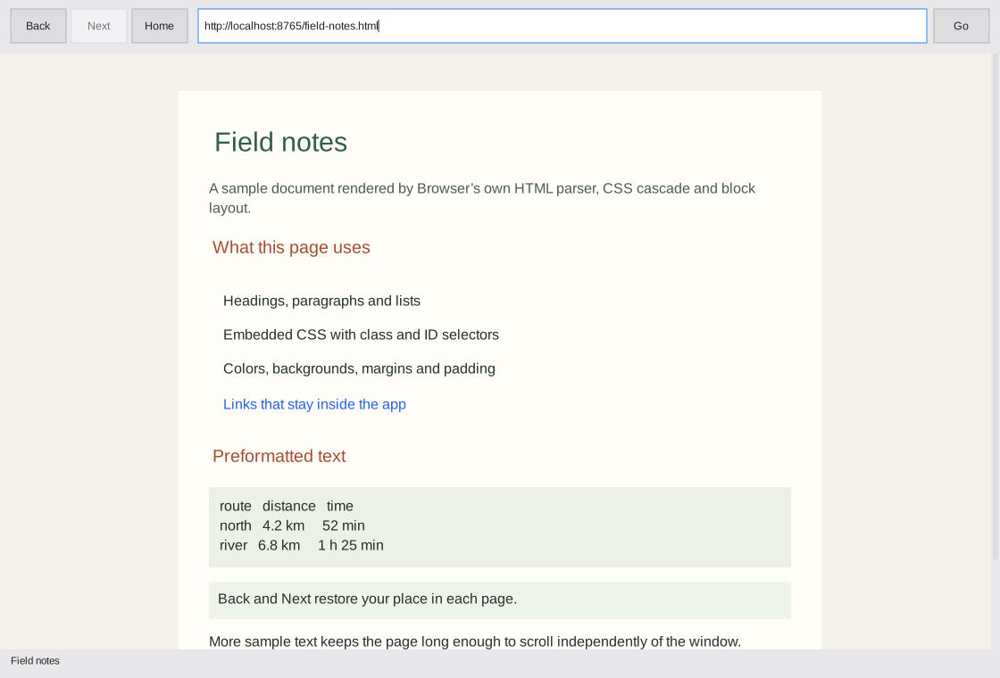
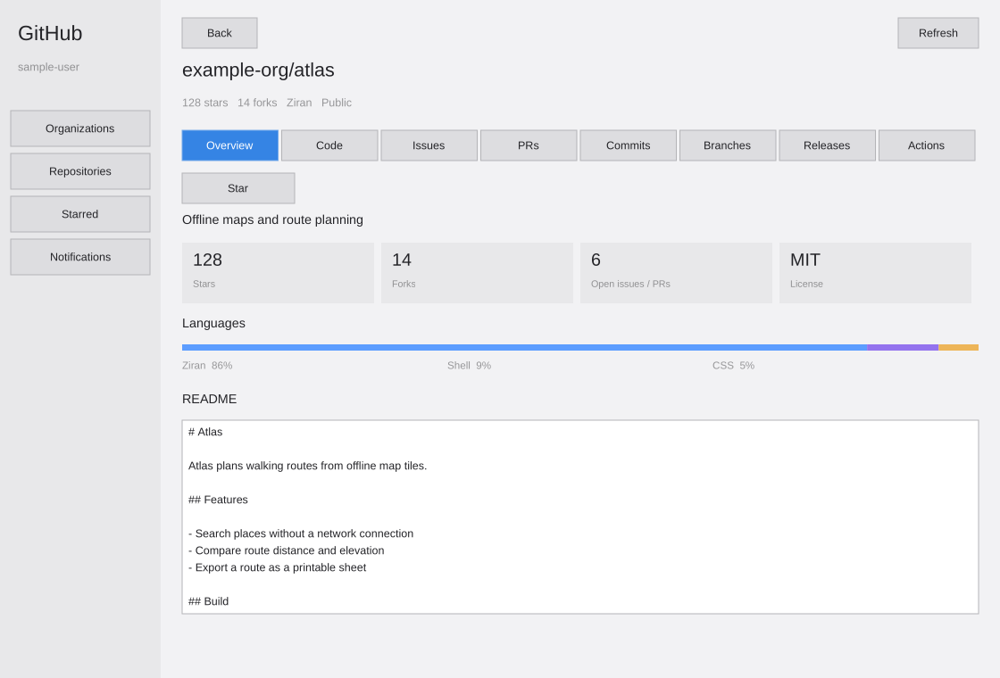
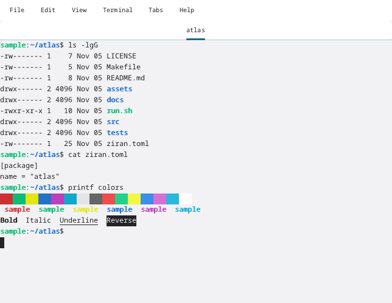
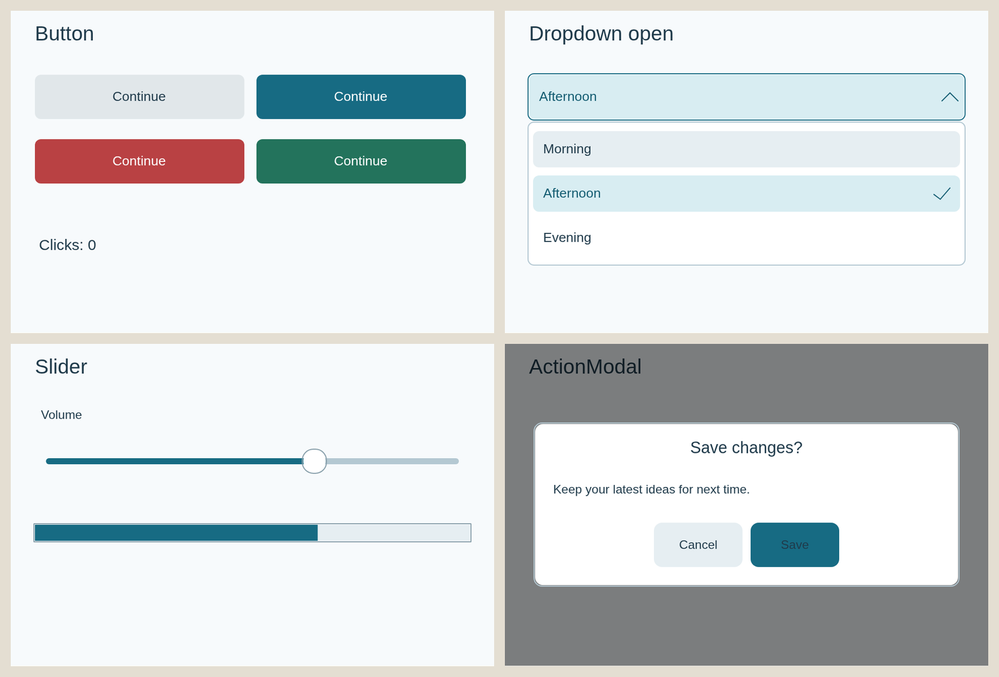
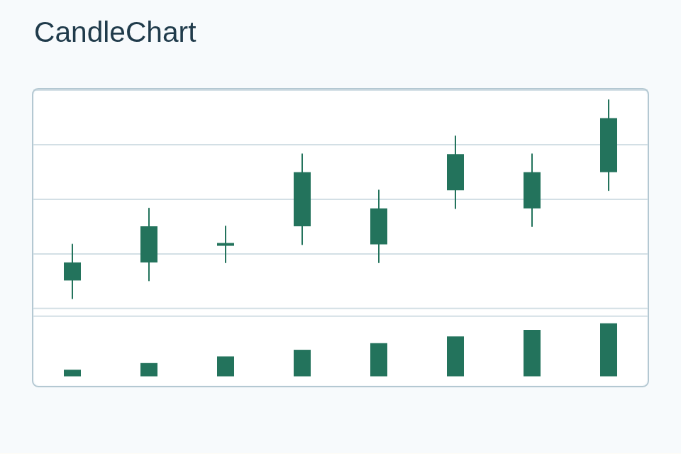
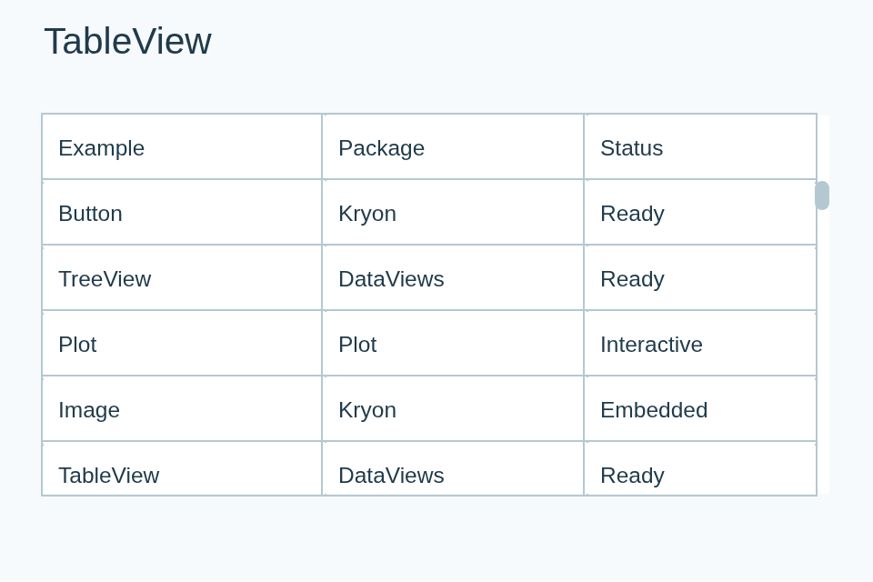
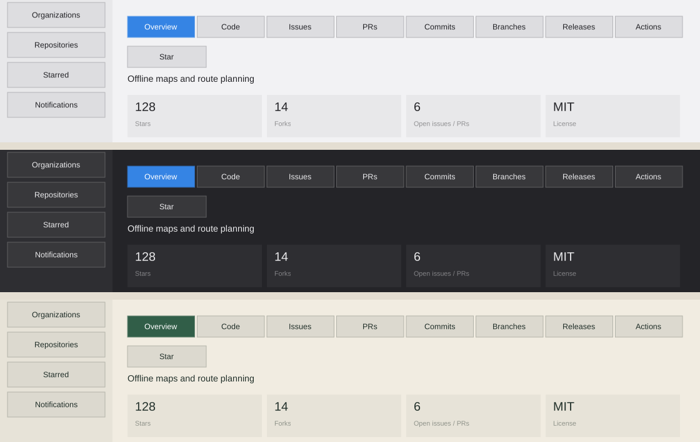
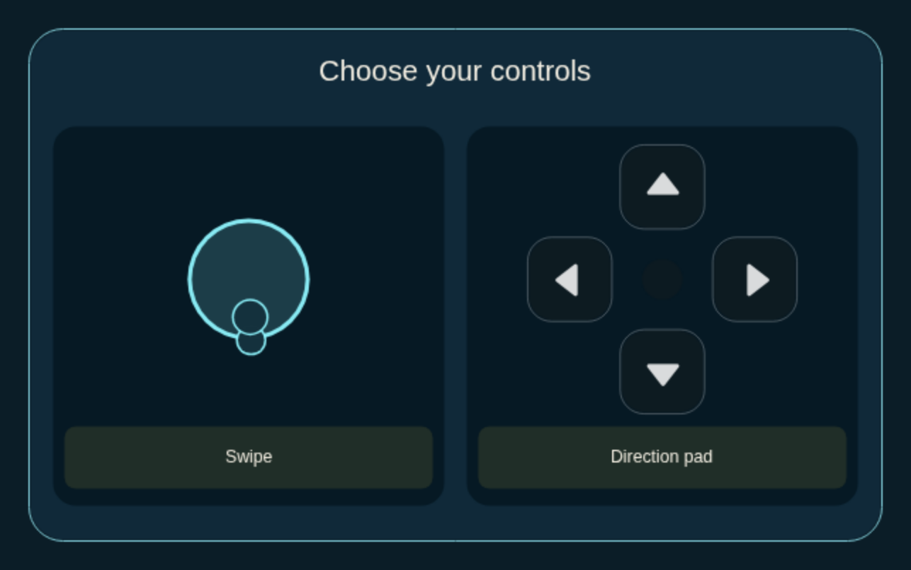

Kryon Labs
Useful interfaces.
Clear foundations.
We make desktop apps and the visual modules behind them: widgets, charts, tables, styles and icons you can try right in your browser.
Visual modules · Apps in active development



Apps
Desktop apps, in the making.
Our apps are still in development. Here is what each one does today, and when you can use it.
Terminal
Tabs, sessions and menus for the Linux desktop.
Details →In developmentBrowser
Reads web documents with its own engine. No Chromium or WebKit inside.
Details →In developmentGitHub
Repositories, issues, pull requests and Actions in one desktop app.
Details →AvailableShelf
A file explorer for Rill and Taiji OS. Build it from source.
Details →Modules
Visual building blocks.
Explore the pieces behind our interfaces. Most come with live examples.

Kryon
Buttons, fields, lists, menus and dialogs for desktop, web and Android.
Explore →
Plot
Line, bar, candle and band charts with axes and markers.
Explore →
DataViews
Tables, trees and Kanban boards for real data.
Explore →
KSS
Style sheets with ready-made themes and color tokens.
Explore →MingCute
About 3,300 icons, filled and regular.
Explore →
Game2D
Collisions, menus and touch controls for 2D games.
Explore →Try it
Edit it. Watch it change.
Change the source and the preview updates in your browser. Every example in the gallery works the same way.
Build with Kryon